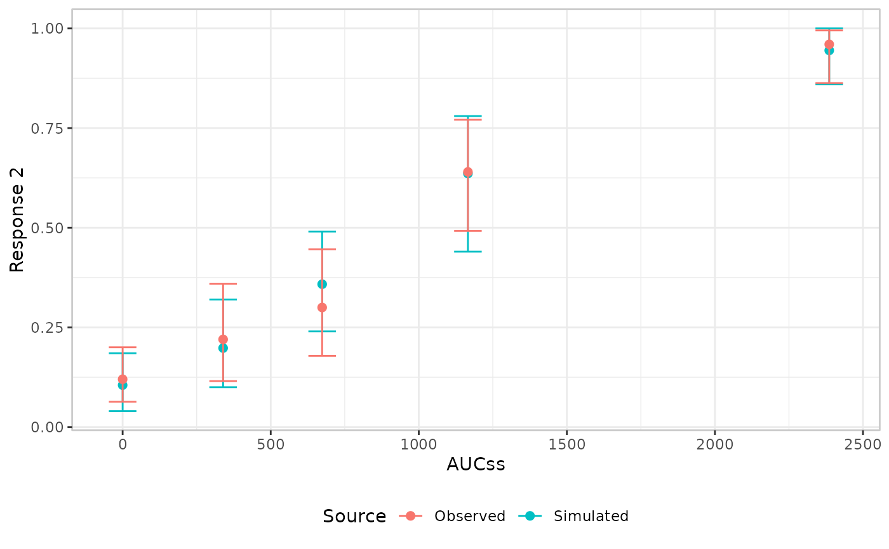
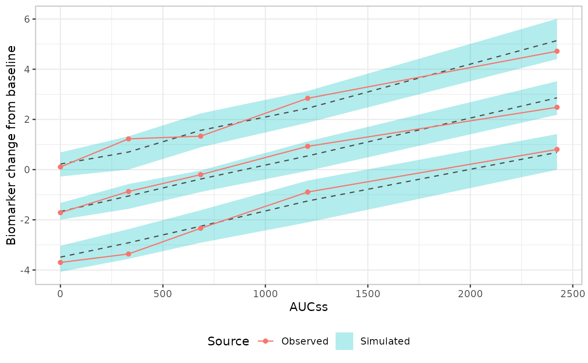

Builder functions for the observed layer (er_vpc_add_observed()),
drawing the observed side of a visual predictive check as a
mean/rate + confidence interval per bin (the default, adaptive to
plot_by's type), a continuous-x line of empirical percentiles, or a
point/interval per bin and per requested percentile.
Usage
er_style_vpc_observed_quantile_line(
data,
config,
exposure,
response,
theme,
point_size = 1.5,
...
)
er_style_vpc_observed_quantile_errorbar(
data,
config,
exposure,
response,
theme,
point_size = 1.5,
errorbar_width = NULL,
dodge = 0,
prob_dodge_width = 0,
...
)
er_style_vpc_observed_mean_errorbar(
data,
config,
exposure,
response,
theme,
point_size = 2,
errorbar_width = NULL,
dodge = 0,
show_label = FALSE,
label_size = 3,
...
)Arguments
- data
The original data frame.
- config
Configuration for the observed layer.
- exposure
Exposure variable.
- response
Response variable.
- theme
Theme components.
- point_size
Point size for all three point/interval builders. Defaults to
1.5forer_style_vpc_observed_quantile_line()/er_style_vpc_observed_quantile_errorbar(), or2forer_style_vpc_observed_mean_errorbar().- ...
Additional named arguments forwarded from
er_vpc_add_observed()'s own....- errorbar_width
Width of
er_style_vpc_observed_mean_errorbar()'s ander_style_vpc_observed_quantile_errorbar()'s error bars. Interpreted differently depending onplot_by's type: for a categoricalplot_by, it's a bar width in the same implied unit-scaled category-gap unitsggplot2::geom_errorbar()normally expects; for a numericplot_by, it's a fraction ofplot_by's own range (config$group_limits), so1would span the full range. Defaults toNULL, which resolves to0.15(er_style_vpc_observed_quantile_errorbar()) or0.2(er_style_vpc_observed_mean_errorbar()) for a categoricalplot_by, or0.025for a numeric one.- dodge
Horizontal offset (as a fraction of
plot_by's own range, likeerrorbar_widthfor a numericplot_by) applied to all of this builder's error bars/points, for bother_style_vpc_observed_mean_errorbar()ander_style_vpc_observed_quantile_errorbar(). Default0(no offset, the previous behaviour). Useful for manually separating the observed layer from an overlapping simulated one at the same bin – e.g.dodge = -0.01on the observed builder paired withdodge = 0.01on the corresponding simulated builder. Only supported whenplot_byis numeric; a nonzero value is ignored with a warning for a categoricalplot_by, where dodging isn't implemented yet.- prob_dodge_width
Horizontal spread (as a fraction of
plot_by's own range) applied toer_style_vpc_observed_quantile_errorbar()'s requestedprobswithin a single bin, symmetrically centred on that bin's own position (added on top ofdodge, if also supplied). Default0(allprobsplotted at the same position, the previous behaviour). Useful when severalprobs' error bars overlap enough to be unreadable. Same numeric-plot_by-only restriction asdodge.- show_label
For
er_style_vpc_observed_mean_errorbar()only: whether to drawconfig$summary'sy_mid_lbl(the rate/mean, formatted viaer_vpc_theme()'sformat_percent/format_number) as a text label just above each point's upper CI bound. DefaultFALSE(no label, the previous behaviour).- label_size
Text size for
show_label's label. Defaults to3.
Value
A list of geoms; see er_style().
Details
See er_style_vpc() for the shared interface every VPC-grammar
builder implements.
er_style_vpc_observed_mean_errorbar() (the default) plots
config$summary's rate/mean + confidence interval, adapting its
x-position to plot_by's type (config$is_numeric_group): equally
spaced at each bin's categorical (or quantile-bin) label when
plot_by is categorical, or at each bin's numeric median (x_median,
from config$summary) on plot_by's own numeric scale when plot_by is
numeric. Because it adapts its x-position family at build time rather
than declaring one statically, it carries no vpc_layout tag – pair it
with er_style_vpc_simulated_mean_errorbar(), which mirrors the same
adaptive logic.
er_style_vpc_observed_quantile_line() plots config$percentiles –
one line per requested percentile – at each bin's numeric midpoint on
plot_by's own numeric scale, for pairing with
er_style_vpc_simulated_quantile_ribbon(). config$percentiles is
only computed for a continuous/count response (see er_vpc()'s
probs argument); calling er_style_vpc_observed_quantile_line()
without it errors.
er_style_vpc_observed_quantile_errorbar() plots config$percentiles
– a point + confidence interval (via ci_quantile()) for each
requested percentile – for pairing with
er_style_vpc_simulated_quantile_errorbar(). Like
er_style_vpc_observed_mean_errorbar(), it adapts its x-position to
plot_by's type (config$is_numeric_group): equally spaced at each
bin's categorical (or quantile-bin) label when plot_by is
categorical, or at each bin's numeric median (x_median, from
config$percentiles) on plot_by's own numeric scale when plot_by is
numeric. Because it adapts its x-position family at build time rather
than declaring one statically, it carries no vpc_layout tag. Unlike
er_style_vpc_observed_quantile_line()/
er_style_vpc_simulated_quantile_ribbon(), it supports a categorical
plot_by as well as a numeric one; like it, it requires a
continuous/count response (a binary response's distribution is
already fully described by its rate) and errors informatively without
config$percentiles. When more than one percentile is requested, all
of them are currently plotted at the same x-position within a bin
rather than dodged apart, so overlapping error bars/points are only
distinguishable by their y-position – dodging support may be added
in a future release.
Each builder maps a constant color = "Observed", so ggplot2 merges
its legend entry with whatever the paired simulated-layer builder
maps for "Simulated" into a single combined legend.
In the worst case – er_style_vpc_observed_quantile_errorbar()
paired with er_style_vpc_simulated_quantile_errorbar() for a
numeric plot_by with several probs – up to 2 * length(probs)
error bars land at the exact same x-position within a bin (every
probs value, for both the observed and simulated layers), which can
be unreadable. dodge (separating the observed and simulated layers)
and prob_dodge_width (spreading a single layer's own probs apart)
are both opt-in, manual escape hatches for this – see their own
argument docs above. Neither is automatic, because which collision is
actually occurring (source-vs-source, probs-vs-probs, or both)
depends on the data at hand.
Examples
if (requireNamespace("erglm", quietly = TRUE)) {
library(erglm)
mod <- erglm_model(ae2 ~ aucss + sex, erglm_data, family = binomial())
# er_style_vpc_observed_mean_errorbar(): the default, adaptive to
# plot_by's type
erglm_data |>
er_vpc(aucss, ae2, plot_by = aucss) |>
er_vpc_add_observed(style = er_style_vpc_observed_mean_errorbar) |>
er_vpc_add_simulated(model = mod, seed = 6203, style = er_style_vpc_simulated_mean_errorbar) |>
plot()
# er_style_vpc_observed_quantile_line(): continuous-x percentile
# lines, paired with the matching simulated ribbon builder
mod2 <- erglm_model(biomarker_change ~ aucss, erglm_data, family = gaussian())
erglm_data |>
er_vpc(aucss, biomarker_change, plot_by = aucss) |>
er_vpc_add_observed(style = er_style_vpc_observed_quantile_line) |>
er_vpc_add_simulated(
model = mod2, seed = 8417, style = er_style_vpc_simulated_quantile_ribbon
) |>
plot()
}

